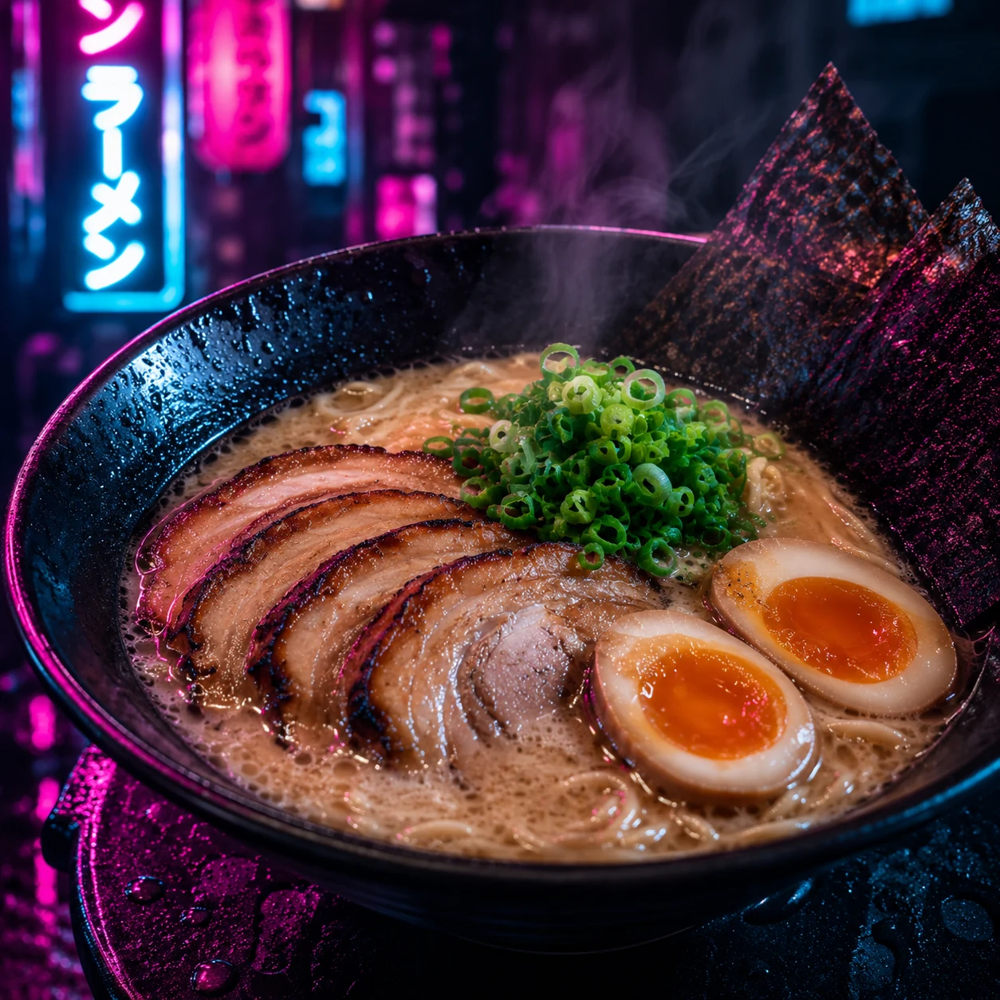
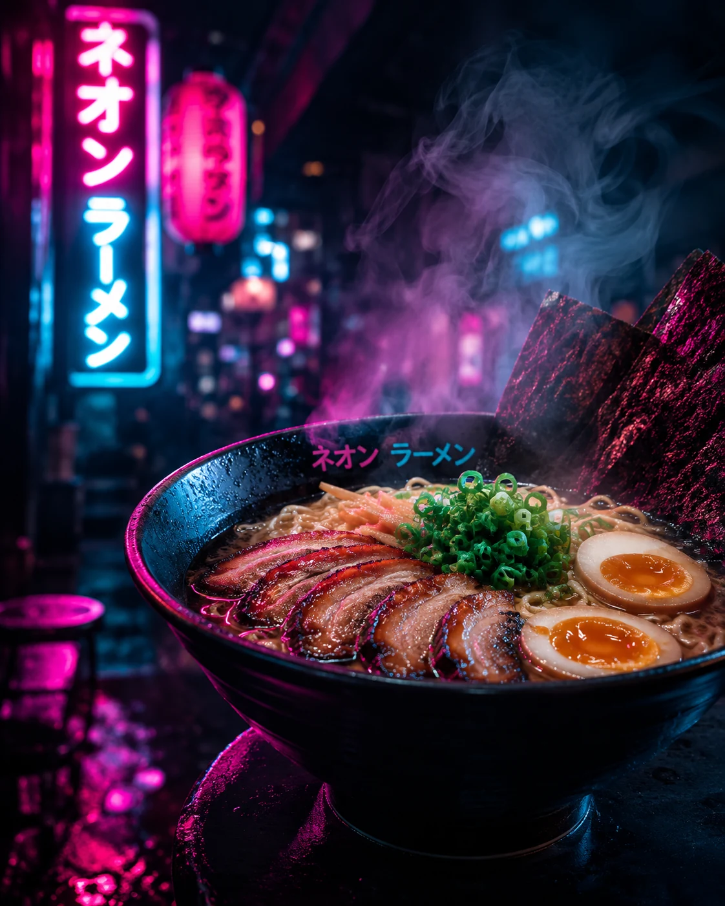
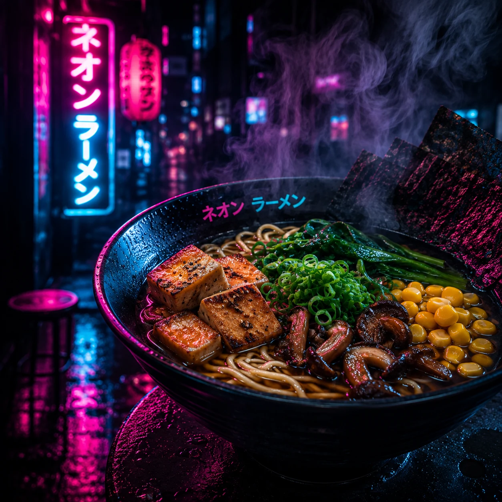

Signature
豚骨
Tonkotsu
Pork broth, chashu, wood ear, scallions, ajitama and nori.
Broth-forward ramen fired under neon. Order ahead, pick up street-side, and get back into the night.


Pork broth, chashu, wood ear, scallions, ajitama and nori.

Miso broth, chili oil, ground pork, bamboo and bean sprouts.

Shoyu broth, tofu, spinach, mushrooms, corn and scallions.
The cart moves with the night. Track live openings and pickup windows, then lock your pickup point at checkout.

Choose the stall nearest you. Live status and pickup windows stay visible.
Build your bowl, pay at the terminal, and get a pickup code.
Show your code at the window. Average hand-off is twelve minutes.